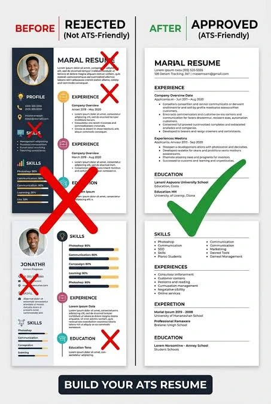
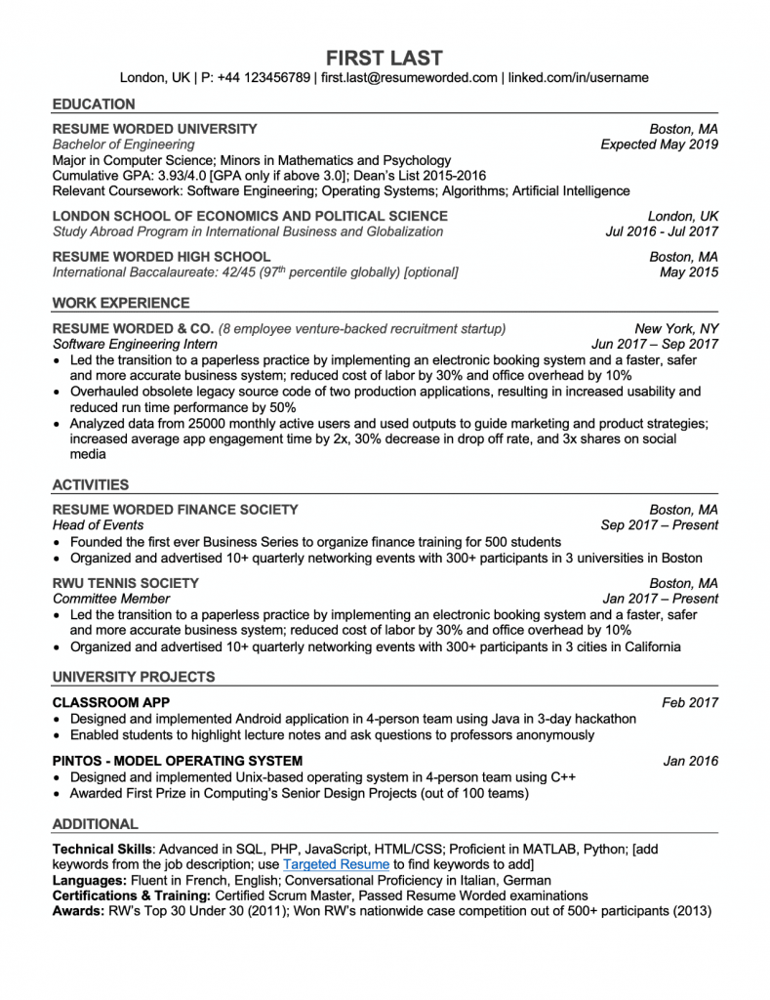

Upload CV dengan format docx atau pdf
Unggah dokumen lamaranmu dengan mudah dan cepat tanpa batasan ukuran file yang rumit.
Ketahui kelemahan CV-mu, optimalkan kata kunci pekerjaan, dan tingkatkan peluang dipanggil interview tanpa kendala bahasa.
Unggah dokumen lamaranmu dengan mudah dan cepat tanpa batasan ukuran file yang rumit.
Sistem otomatis memindai struktur dokumen serta kecocokan kata kunci agar lolos ATS.
Terima masukan perbaikan yang jelas, terarah, dan mudah dipahami untuk mendongkrak kualitas CV-mu.

Pelajari cara merangkum pengalaman kerja terbaikmu dalam tiga kalimat padat yang memikat perekrut.

Hindari penggunaan tabel kompleks dan kolom ganda yang kerap mengecoh mesin pembaca otomatis.

Sesuaikan istilah teknis dalam lembar riwayat hidup Anda dengan standar rekrutmen perusahaan modern.

Yuk, buat akun sekarang! Kamu bisa memantau history pengecekan CV secara berkala dan melihat perkembangannya dari waktu ke waktu. Selain itu, kamu juga berhak mengunduh berbagai pilihan template CV profesional secara gratis setelah masuk ke akunmu!